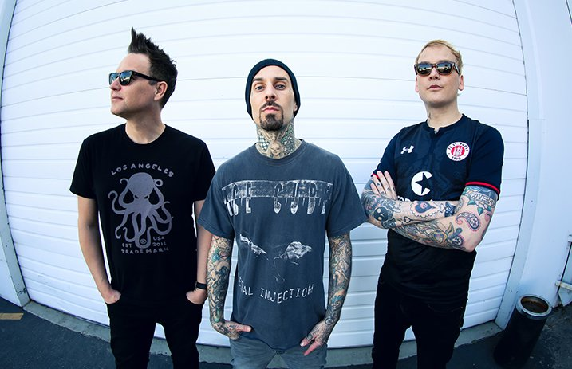

Lista de membros de 1992 até ao momento
1992-1997
- Tom Delonge (vocal/guitarra)
- Mark Hoppus (vocal/baixo)
- Scott Raynor (bateria)
1997-2005
- Tom Delonge (vocal/guitarra)
- Mark Hoppus (vocal/baixo)
- Travis Barker (bateria)
2009-2015 (Após pausa)
- Tom Delonge (vocal/guitarra)
- Mark Hoppus (vocal/baixo)
- Travis Barker (bateria)
2015 até atualmente
| Membro |
Idade |
Função |
Periodo |
| Mark Hoppus |
49 |
Vocal/Baixo |
2015- |
| Travis Barker |
45 |
Bateria |
| Matt Skiba |
44 |
Vocal/Guitarra |
| 2 álbuns lançados |
Foto membros atuais
Mark Hoppus, Travis Barker e Matt Skiba
